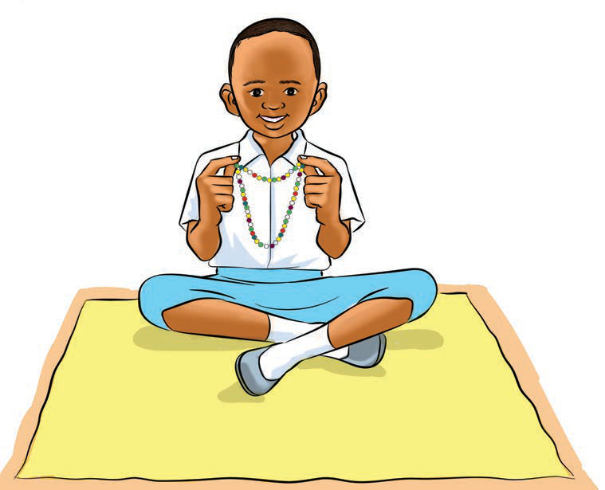

(c)
Exercise 11
1. What have you seen happening in pictures (a), (b) and (c)?
2. Explain other items that can be made by beadwork.

(c)
1. What have you seen happening in pictures (a), (b) and (c)?
2. Explain other items that can be made by beadwork.